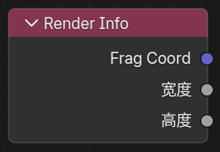
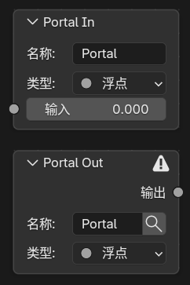
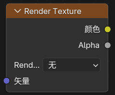
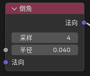

主要扩展节点¶
概述¶
Blender 5.1 NPR Port 添加了大量新的着色器节点，分为三大类：
- Eevee 通用辅助节点 - 提供渲染信息和工具节点
- Eevee 物体材质节点 - 用于物体着色的专用节点
- Filter 域节点 - 用于全屏滤镜的节点
Eevee 通用辅助节点¶
Render Info¶
入口¶
Add > Input > Render Info

输出¶
-
Frag Coord：屏幕空间坐标（xy归一化到0-1，z为深度） -
Width：渲染区域宽度（像素值） -
Height：渲染区域高度（像素值）
作用¶
提供当前 Eevee 渲染窗口的坐标和像素尺寸。
Scene Time¶
入口¶
Add > Input > Scene Time

输入¶
Scale：用于缩放帧数的数值
输出¶
-
Frame：当前帧数 -
Seconds：当前帧对应的秒数 -
Timeline：0-1映射的场景时间（从开始帧到结束帧） -
Scaled Frame：当前帧除以 Scale 后的结果
作用¶
提供当前场景时间相关的数值输出，用于时间控制和动画同步。
Screen Derivative¶
入口¶
Add > Utilities > Math > Screen Derivative

功能¶
获得屏幕之间相邻像素之间的差异：
-
DDX：X方向的屏幕空间导数 -
DDY：Y方向的屏幕空间导数 -
DDXY：DDX和DDY的组合（DDX + DDY）
用途
屏幕导数信息通常用于流纹理、各向异性计算和屏幕空间效果。
Portal In / Portal Out¶
入口¶
Add > Layout > Portal InAdd > Layout > Portal Out

功能说明¶
这是一组用来整理节点连线的"传送门"节点。
工作方式¶
-
Portal In：在当前节点树里存一个有名字、有类型的值 -
Portal Out：在同一节点树内按名字把这个值取出来继续使用
其他特性¶
-
新建
Portal In时会自动生成唯一名称 -
Portal Out上带有放大镜按钮，可快速跳转到对应的Portal In位置
限制¶
-
只在同一个 shader node tree 内识别
-
不支持跨节点树
-
不支持跨节点组自动穿透
-
同名输入应只保留一个来源
使用场景
Portal 节点适合在复杂节点树中整理连线，避免长距离、复杂的连接关系。
Eevee 物体材质节点¶
Render Texture¶
入口¶
Add > Texture > Render Texture

作用¶
读取前面在场景里配置好的 Render Textures 条目。
输入输出¶
-
输入：
Vector（UV坐标或采样位置） -
输出：
Color（纹理颜色）、Alpha（透明度值）
Screenspace Info¶
入口¶
Add > Input > Screenspace Info

输入输出¶
-
输入：
View Position（摄像机空间位置） -
输出：
Scene Color（场景观看颜色）、Scene Depth（场景深度值）
作用¶
获得当前的渲染缓冲颜色或深度的内容

使用说明¶
-
渲染设置中需要打开
Raytracing -
材质选项
Render Method选择Dithered -
材质选项打开
Raytraced Transmission -
View Position默认输入为:position变换到摄像机空间,再反转z轴

性能提示
Screenspace Info 依赖光线追踪，会对性能有影响。
World Environment¶
入口¶
Add > Input > World Environment

输入输出¶
-
输入：
Direction（采样方向） -
输出：
Color（环境颜色）
作用¶
直接采样 Eevee 的世界环境颜色，不依赖屏幕背后是否还有几何。
说明¶
- 读取世界环境光照探头颜色，可在世界环境中调整分辨率

-
Direction不连接时，默认使用当前表面的视线方向 -
Direction连接后，可以按指定方向采样世界环境
World To Tangent¶
入口¶
Add > Utilities > Vector > World To Tangent

输入输出¶
-
输入：
Vector（世界空间方向） -
输出：
Vector（切线空间方向）
作用¶
把一个世界空间方向向量转换到当前表面的切线空间。
说明¶
-
主要用于把世界空间方向改写成以
Tangent / Bitangent / Normal为基底的局部方向 -
节点面板中可指定
UV Map，该 UV 的切线会作为转换基底
Bevel¶
入口¶
Add > Input > Bevel

输入输出¶
-
输入：
Radius（倒角半径）、Normal（表面法线提示） -
输出：
Normal（倒角后的近似法线）
面板选项¶
Samples（采样次数越高质量越好，性能消耗越大）
作用¶
在 Eevee 中生成近似的倒角法线，用来让硬边看起来更圆润。
说明¶
-
Cycles仍然使用官方原本的真实几何倒角算法 -
Eevee这里使用的是同物体屏幕空间近似 -
结果依赖当前视角、深度缓冲和可见邻域，不等同于
Cycles的真实Bevel
Curvature¶
入口¶
Add > Input > Curvature

输入¶
-
Samples：采样点数 -
Sample Radius：采样半径：控制更新方位的大小 -
Thickness：取值和取值上下限之间的凹面上限 -
Scale：曲率值的缩放比例
输出¶
-
Scene Curvature：根据屏幕空间提取的曲率值 -
Scene Rim：边缘光（rim light）效果
面板选项¶
Local: 忽略其他物体深度
作用¶
移植的Goo Engine中的曲率节点，提供曲率和边缘光输出
Shader Info¶
入口¶
Add > Input > Shader Info

输入¶
-
World Position：世界空间位置（黑财默使用当前炫置） -
Normal：表面法线（黑财默使用云性法线）
输出¶
-
Diffuse Shading：兰伯特光照 -
Shadow：遮蔽阴影 -
Ambient Lighting：环境间接光（来自世界环境+光照探针） -
Half-Lambert Factor：半兰伯特光照
阴影模式说明¶
-
Built-in默认模式，使用 Eevee 原本的阴影计算 -
Soft Filtered把黑白抖动阴影变成更平滑的灰度半影 -
Lightgroup支持灯光组过滤

Light Info¶
入口¶
Add > Input > Light Info
功能说明¶
读取指定灯光信息
固定输出¶
-
Color：灯光颜色 -
Power：灯光强度 -
Type：灯光类型 -
-1：没有指定灯光 0：Point（点光源）1：Sun（平行光）2：Spot（聚光灯）3：Area（面光源）
按灯光类型自动出现的输出¶
-
Position：灯光世界位置（点光源、聚光灯、面光源） -
Direction：灯光方向（平行光、聚光灯、面光源） -
Radius：灯光半径（点光源、聚光灯、面光源） -
Spot Size：灯光尺寸（聚光灯） -
Sun Angle：太阳角度（平行光）
说明¶
- 如果你要做逐灯处理，应该使用
NPR Tree里的For Each Light。
Scene Color¶
入口¶
Add > Input > Scene Color
仅在 Filter 域下可用。
作用¶
读取 Eevee 当前场景缓冲，可在节点面板中切换 Source：
-
Color：读取渲染的最终场景颜色 -
Depth：读取线性深度值 -
Normal：读取渲染法线 -
Shadow：读取阴影遮罩（0-1灰度） -
Position：读取世界空间坐标
输入输出¶
-
输入：
Vector -
输出：
Color、Alpha
说明¶
-
Shadow输出可直接用于 Toon 分层、阈值处理和过滤效果 -
Position可用于屏幕空间计算和深度相关的特效 -
本节点仅在
Filter域材质中可用，通常在滤镜处理中读取场景缓冲数据